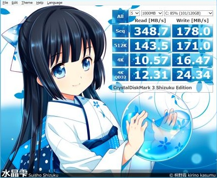

Интересная утилита на которую я случайно наткнулся на просторах сети - для проверки работоспособности технологии TRIM в ОС.

Первый пошёл! Встречаем Crucial BX 100 250Gb
Итак, первым экземпляром в моих руках оказался SSD накопитель Crucial BX100 250GB.
Первое впечатление от накопителя такого формата, это даже не «ВАУ», а какое-то «нефига себе какой легкий»))

Данная утилита производит ряд синтетических тестов накопителя, которые эмулируют нагрузки, получаемые при работе пользователей. К тому же данная утилита является бесплатной. Последнюю версию можно скачать
Перед погружением в мир SSD накопителей, оценим всю сложность рассматриваемого объекта и технологические возможности современного производства на примере компании Micron.